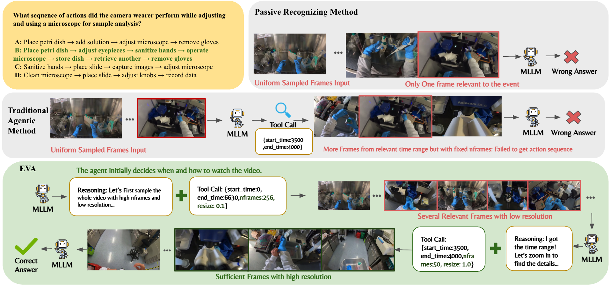

EVA transforms video MLLMs from passive frame-consumers into active planners — deciding what, when, and how to watch before touching any pixels. Result: 6–12% accuracy gain with 30% fewer visual tokens across six video understanding benchmarks.
Existing video understanding approaches suffer from two fundamental limitations:
Processes all uniformly sampled frames at once. A single relevant frame is buried among hundreds of irrelevant ones — leading to visual misguidance and wrong answers.
Adds tool calls, but remains perception-first: the agent sees uniform frames before reasoning. Fixed FPS and resolution prevent adaptive information gathering.
Plans before perceiving: reads only the question, forms a strategy, then selects exactly which frames to fetch at what resolution — using 30% fewer visual tokens.

Figure 1. Three paradigms for video understanding. Passive MLLM uses uniform sampling. Traditional Agent adds tool calls but starts from frames. EVA plans from the query, then selects frames strategically.
Uniformly sampled frames often contain irrelevant actions that mislead the model. EVA establishes intent textually before any visual interaction, preventing distraction from noisy frames.
By identifying which segments matter upfront, EVA fetches only necessary frames at optimal resolution — reducing visual token consumption by up to 30% compared to Qwen2.5-VL.
The iterative Summary → Plan → Action → Reflection loop enables the agent to autonomously adapt its strategy based on what it sees — like a detective gathering evidence.
EVA's tools expose nframes, resize, start_time, and end_time — giving the agent full control over perception granularity. Traditional agents use fixed FPS.
EVA uses a three-stage training pipeline to learn efficient video reasoning end-to-end.
EVA autonomously decides what, when, and how to watch — through an iterative plan–act–reflect loop. The animation below shows a real example.
"What sequence of actions did the camera wearer perform while adjusting and using a microscope for sample analysis?"
"I need to identify a microscope-related action sequence. Rather than loading all frames at once, let me first survey the entire video at low resolution to locate the relevant segment efficiently."
"I'll sample 256 frames across the full video at 0.1× resolution — minimal tokens, maximum temporal coverage."
watch_video({ start_time: 0, end_time: 6630, nframes: 256, resize: 0.1 // ← low resolution })
"Surveying the full video at low resolution. Looking for microscope-related activity..."
"I can see frames around t = 3500–4000s contain relevant microscope activity. The rest of the video is background or unrelated actions."
"I'll now zoom into this specific window at full resolution to identify the exact action sequence."
watch_video({ start_time: 3500, end_time: 4000, nframes: 50, resize: 1.0 // ← full resolution })
"Zooming into t=3500–4000s at full resolution to identify each action in the sequence..."
Place petri dish → adjust eyepieces → sanitize hands → operate microscope → store dish → retrieve another → remove gloves
EVA-GRPO sets the best open-source score on every benchmark, while using far fewer frames than fixed-sampling baselines.
| Model | LongVideoBench | MLVU | VideoMME Long / Overall | LVBench | ||||
|---|---|---|---|---|---|---|---|---|
| Frames | Acc | Frames | Acc | Frames | Acc | Frames | Acc | |
| Closed-Source Models | ||||||||
| GPT-4o | 32 | 58.2 | 0.5 fps | 64.6 | 384 | 65.3 / 71.9 | 60 | 48.9 |
| Gemini-1.5-Pro | 32 | 55.2 | — | — | 0.5 fps | 67.4 / 75.0 | 3600 | 33.1 |
| Static Frame Sampling | ||||||||
| ShareGPT4Video | 16 | 39.7 | 16 | 46.4 | 16 | 35.0 / 39.9 | — | — |
| LongVA | — | — | 256 | 56.3 | 128 | 46.2 / 52.6 | — | — |
| VITA-1.5-7B | — | — | — | — | 16 | 47.1 / 56.1 | — | — |
| Video-R1 | 32 | 52.7 | 32 | 60.2 | 32 | 49.4 / 59.9 | 32 | 35.3 |
| VideoChat-R1 | 32 | 49.1 | 32 | 54.3 | 32 | 46.2 / — | 32 | 34.3 |
| Qwen2.5-VL | 32 | 43.2 | 32 | 48.4 | 32 | 44.7 / 53.6 | 32 | 31.6 |
| Adaptive Agent | ||||||||
| VideoAgent | — | — | — | — | 87 | 49.0 / 56.0 | 25.5 | 29.3 |
| FrameThinker | 21.1 | 52.9 | 23.2 | 59.1 | 24.1 | 47.6 / — | 23.9 | 36.6 |
| VideoMTR | — | — | — | — | 32 | 51.0 / 59.0 | — | — |
| Ours | ||||||||
| EVA-SFT | 33.8* | 49.9 | 46.7* | 52.3 | 26.6* | 45.8 / 56.0 | 56.2* | 26.5 |
| EVA-KTO | 35.6* | 53.2 | 28.7* | 57.4 | 24.1* | 45.1 / 56.5 | 34.5* | 36.0 |
| EVA-GRPO | 25.3* | 55.0 | 22.2* | 68.3 | 22.8* | 48.4 / 60.2 | 26.8* | 43.3 |
* Adaptive frame count — values are per-video averages. Bold = best open-source result per benchmark.
| Model | Frames | SR | IMC | TCI | TA | MHR | PAR | CTI | Overall |
|---|---|---|---|---|---|---|---|---|---|
| Closed-Source Models | |||||||||
| GPT-4o | 32 | 50.0 | 49.6 | 38.8 | 30.0 | 44.0 | 39.2 | 37.0 | 42.0 |
| Gemini-2.0-Flash | — | 41.8 | 33.7 | 23.1 | 20.5 | 30.1 | 26.8 | 33.7 | 30.6 |
| Open-Source Models | |||||||||
| InternVL2.5-8B | 32 | 28.0 | 32.2 | 21.5 | 7.7 | 25.7 | 23.8 | 22.6 | 23.8 |
| InternVL3-8B | 32 | 29.5 | 40.7 | 37.9 | 35.1 | 24.6 | 38.9 | 24.1 | 32.3 |
| Qwen2.5-VL-7B | 32 | 38.4 | 34.8 | 17.6 | 30.0 | 27.1 | 18.6 | 25.2 | 27.8 |
| SEED-Bench-R1 | 32 | 42.8 | 35.1 | 25.6 | 40.5 | 29.2 | 29.6 | 32.9 | 33.5 |
| VideoChat-R1 | 32 | 42.1 | 38.8 | 24.5 | 39.5 | 29.5 | 27.8 | 29.5 | 33.0 |
| Video-R1 | 32 | 48.6 | 41.7 | 28.9 | 34.5 | 31.0 | 33.6 | 35.6 | 36.5 |
| Ours | |||||||||
| EVA-SFT | 11.5* | 44.5 | 33.7 | 26.4 | 39.5 | 23.2 | 31.9 | 32.2 | 32.6 |
| EVA-KTO | 5.8* | 42.8 | 36.2 | 22.7 | 39.5 | 22.9 | 32.0 | 31.2 | 32.9 |
| EVA-GRPO | 36.8* | 49.3 | 39.5 | 30.4 | 44.5 | 27.1 | 37.6 | 35.2 | 37.2 |
* Adaptive frame count — values are per-video averages. Bold = best open-source result per column.
@article{zhang2026eva,
title = {EVA: Efficient Reinforcement Learning for End-to-End Video Agent},
author = {Zhang, Yaolun and Wang, Ruohui and Wang, Jiahao and Tang, Yepeng
and Zheng, Xuanyu and Duan, Haonan and Lu, Hao and Deng, Hanming
and Lu, Lewei},
journal = {arXiv preprint arXiv:2603.22918},
year = {2026}
}